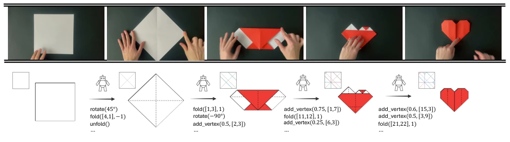
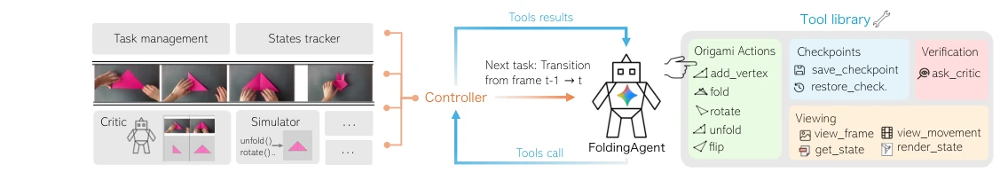
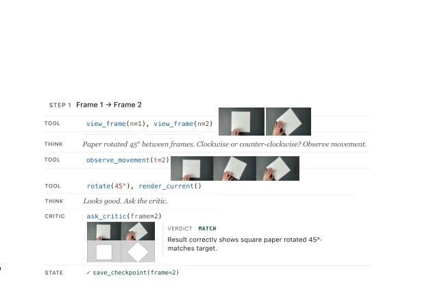
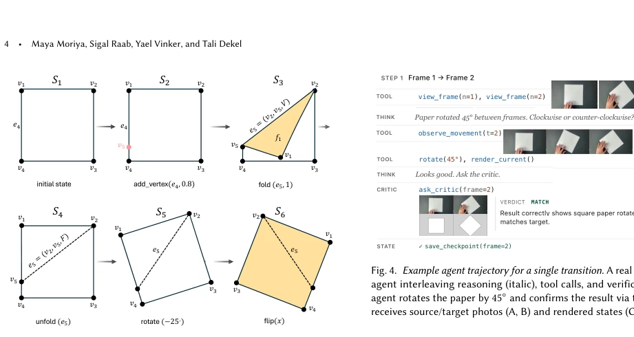
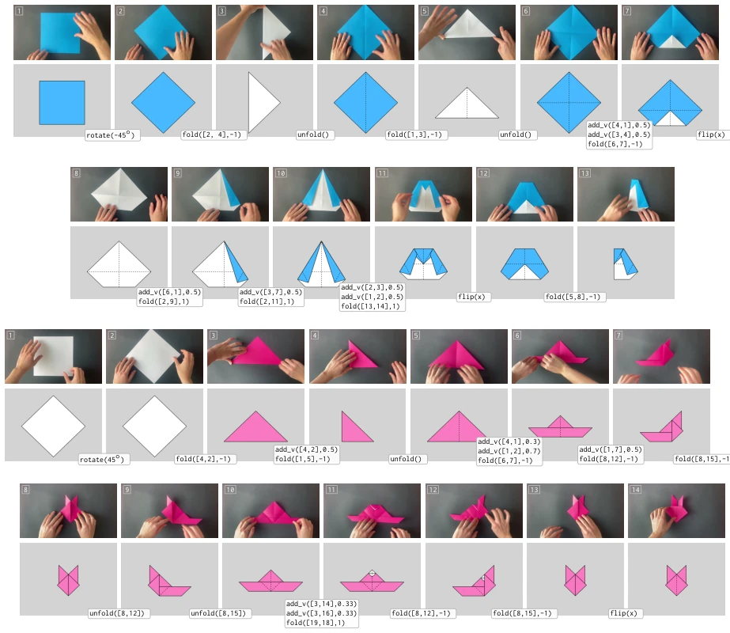
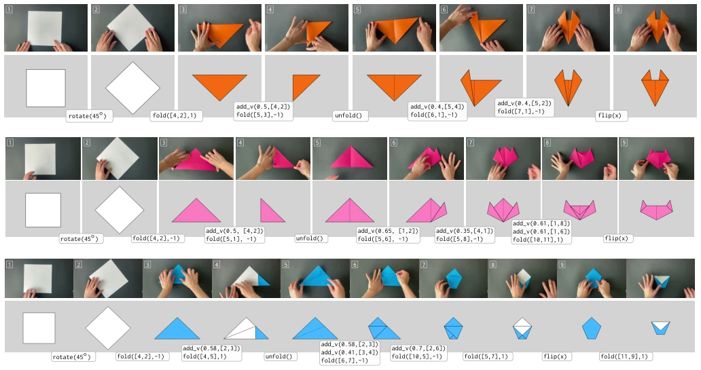
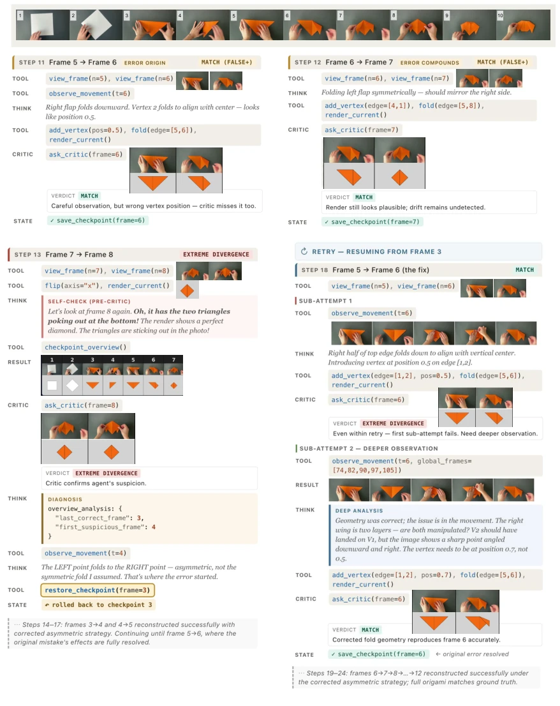
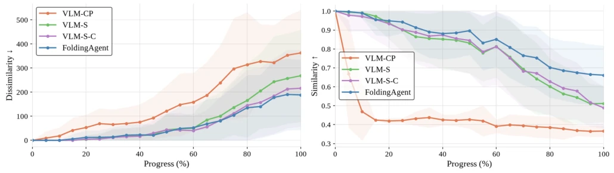
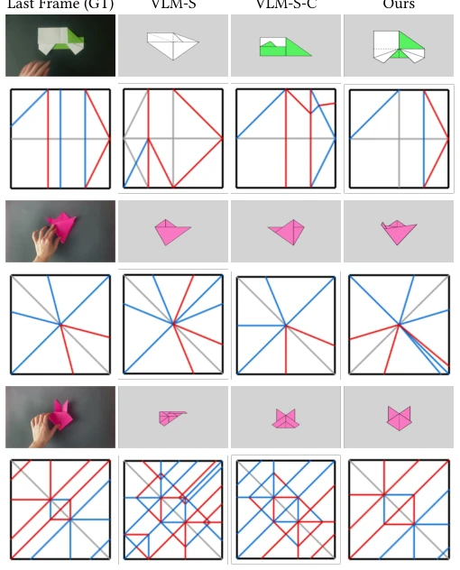
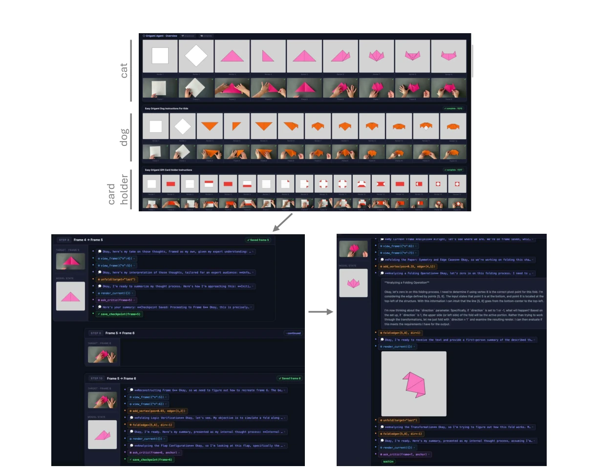

FoldingAgent performs this task quite well, converting human videos into machine code, effectively automating the task of "learning origami by watching videos". The highlight lies in that it does not naively predict directly, but instead employs a "self-correcting" Agent framework, using a simulator as a judge, rolling back if it fails; this approach is very effective in long-sequence tasks. However, a critique is that this is essentially still a VLM wrapped in a shell, the core reasoning capability remains unchanged, merely adding a "rollback" mechanism. Moreover, it is limited to Pureland origami, complex 3D folding remains unfeasible. In terms of cost accounting, one sequence costs 4 million tokens, $8, this cost is prohibitive for robotic learning. However, for bridging the gap between human intuition and machine logic, this is indeed a solid starting point, at least better than those that only guess static crease patterns. It demonstrates the potential of the Agent paradigm in embodied tasks, but also exposes an over-reliance on VLM capabilities.
The core pain point lies in that human origami knowledge is "unstructured video", while machines require "structured parameters". Existing computational origami methods mostly assume the input is already a crease pattern (crease pattern), such as the FOLD standard by Demaine et al. (2016), but this is difficult to obtain in reality. Visual reconstruction work such as Kato et al. (2025) can only handle single steps or controlled scenarios, unable to handle long-sequence videos. Learn2Fold (Huang et al., 2026) although uses LLM, but it generates sequences from crease patterns, not inferring from videos. This leads to a large amount of online instructional videos being unusable by machines. This study aims to fill this semantic gap, enabling robots to learn complex operations directly from demonstration videos, which is crucial for imitation learning in embodied intelligence. Existing methods lack verification of physical consistency, leading to generated programs often failing to compile or fold.

Fig. 1. Given a sequence of keyframes from an instructional origami video (top), our framework, FoldingAgent, infers the full folding procedure as a sequence of executable simulator actions. For each transition, we illustrate the current estimated paper geometry, the predicted simulator actions used to obtain the next paper state, and the accumulated crease pattern. The recovered program is parametric and structured, supporting re-rendering, editing, and analysis.
The overall flow is: video extracts keyframes -> Agent (VLM) reasoning -> tool library interaction -> generate program. Agent is based on pre-trained VLM, calling tools via Controller. The core innovation is state representation and action space: state extends FOLD format, adding face orientation (O) and layer order (L); action space is defined as 5 primitives (add_vertex, fold, unfold, rotate, flip). Agent workflow is serialized: for each frame transition, Agent proposes action -> simulator executes -> renders state -> Visual Critic (independent VLM) verifies. If Critic judges mismatch, Agent can rollback to previous Checkpoint to replan. This "propose-verify-rollback" mechanism effectively alleviates error accumulation in multi-step folding. Controller is responsible for managing state history and tool scheduling, ensuring physical consistency. Additionally, the system introduces a bounded exploration budget, preventing infinite rollback, ensuring inference efficiency.

Fig. 2. FoldingAgent Pipeline. At each step, the folding agent (a pretrained VLM) infers the action transition between two frames. The agent has the flexibility to issue calls to different tools from the Tool Library (right) – proposing candidate actions, verifying them, revising past decisions, and more. The Controller (orange) holds the agent’s action-prediction timeline, the state history, the input video frames, and can call the origami simulator and the critic (a separate VLM). Tool calls are dispatched by the Controller, with results returned to the agent for further reasoning (blue loop). The agent continues until it commits a checkpoint for frame 𝑡, after which the next transition begins.

Fig. 4. Example agent trajectory for a single transition. A real log showing the agent interleaving reasoning (italic), tool calls, and verification. Here the agent rotates the paper by 45◦and confirms the result via the critic, which receives source/target photos (A, B) and rendered states (C, D).

Fig. 3. State representation and action space. Starting from a flat square 𝑆1, we apply the five primitives in sequence (add_vertex, fold, unfold, rotate, flip) and show the states they produce. New vertices, edges, and faces are introduced as the graph evolves; yellow faces are back-side up. Active folds are shown solid, flat creases dashed.
Dataset is self-built PurelandFold, containing 27 sequences and ground truth annotations. Baselines include VLM-CP (directly predict crease pattern), VLM-S (predict action), VLM-S-C (action + Critic). Evaluation metrics cover compilation validity (CV), topology/geometry similarity (TSS/GS), and crease difference (CPD). Results show, the complete method outperforms baselines on 100% sequence completion rate, and has highest geometric similarity. Ablation experiments prove, introducing Critic and rollback mechanism significantly improved long-sequence robustness. For example, VLM-CP only has 8% compilation success rate, while FoldingAgent reaches 96%. User study also indicates, its rendered results are closer to ground truth. But experiments also exposed limitations, such as recognition difficulty under severe occlusion, and handles composite actions performed simultaneously (such as rotating while flipping) poorly.

Fig. 5. Long-sequence qualitative result. For each example, we show the input keyframes (top), rendering of folded states reconstructed by our method (bottom), and the inferred actions between consecutive keyframes. These examples illustrate our method’s ability to recover a long folding procedure involving rotations, folds, unfolds, flips, and precise vertex definitions. See Appendix A for the full set of results.

Fig. 6. Qualitative results. For each sequence, we show the input keyframes (top) and the rendering of the corresponding folded states predicted by our method (bottom). The actions inferred between consecutive keyframes are shown between the rendered states.

Fig. 7. Recovery from critic-approved errors. The top row shows the full keyframe sequence, while the four panels below illustrate selected reasoning steps. An incorrect fold at frame 5 →6 is approved by the critic and propagates to frame 7. The agent detects the divergence at frame 7 →8, rolls back to an earlier checkpoint, and reconstructs the sequence using additional tool calls until it finds a corrected fold that remains consistent through the final frame.

Fig. 8. Performance of our method and ablation variants as a function of sequence progress. We report mean Dissimilarity and Similarity scores averaged over completed sequences. As seen, the performance of all methods declines as the sequence progresses, yet our method exhibits a steadier slope with a notable gap to the others, which increases as the complexity grows.

Fig. 9. Qualitative comparison. Each row shows a ground-truth keyframe (left) alongside the reconstructed geometry and crease pattern produced by VLM-S, VLM-S-C, and our full framework; mountain and valley creases are marked in red and blue lines, respectively; flat edges are marked in gray.
其他图片Other Figures

Fig. 10. Results dashboard. The main screen (top) shows all reconstructed sequences. Each row corresponds to one folding sequence, with dataset keyframes shown below the rendered geometries. Users can scroll through the sequences to inspect the diversity of examples and the quality of reconstructions. Clicking a sequence opens a detailed trace view (bottom left), which logs all agent interactions. Folding steps are shown with nested indentation, and each interaction element, such as a tool call or response, can be expanded to show details including agent reasoning, requested images or renders, and critic calls and responses. In the example shown (bottom right), the agent’s reasoning and the response to the render_current tool are expanded. After observing the render, the agent recognizes t